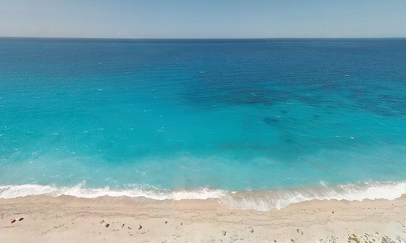

Bay of Bahia
Nestled on the northern end of the Isle of Caludge, this beach is cited as the most popular getaway for vacationers during peak summer months. Popular activities include scuba diving, snorkeling, and bird watching.

Selange Beach
Selange Beach is known for its temperate sand. Made up of ground coral due to thousands of years of tectonic activity, the sand is always cool to the touch, despite the heat. The western portion includes fantastic flora and fauna and many pre-Columbian ruins.

Hunt Lagoon
Known primarily for it's hidden location on Kamar Island (which includes swimming through an underground cave), Hunt Lagoon offers a peaceful respite from the tourist-laden locations found throughout Kamar. If possible, make a visit at night – it's bioluminescent lagoon is like viewing fireworks in the water!

Moat Lagoon
Last, but certainly not least, is Moat Lagoon. This is one of the most difficult beach locations to access. The lagoon is located inside of a prehistoric cenote, or underground aquifer. Accessing it involves crossing the moat surrounding the lagoon (hence the name) with locals by kayak. Once there, marvel at the phenomenal (and endangered) quetzal bird and its golden feathers.